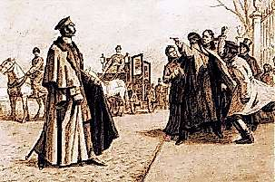

Борис Акунин
Мой календарь
Булгаковский Иешуа главным человеческим пороком считал трусость, а по-моему, нет ничего хуже неблагодарности.
Сегодня вспоминаем, что это такое и к чему приводит. День для подобных размышлений весьма уместный.
16 апреля 1866 года Дмитрий Каракозов попытался убить Александра II. Государь отправился погулять по Летнему Саду, мер безопасности никаких не было. Во-первых, считалось, что покушаться на жизнь помазанника никому не придет в голову, а во-вторых, царя все любили: он освободил крепостных и предоставил обществу множество невиданных свобод.
Но молодой человек, одолеваемый мечтами о величии, выстрелил в царя-освободителя из пистолета и не попал только чудом. Когда на террориста накинулись, он кричал: «Дурачье, ведь я для вас же, а вы не понимаете!». Всегда найдется кто-нибудь, единственный из всех знающий истину.
В кармане у Каракозова нашли листовку: «Грустно, тяжко мне стало, что погибает мой любимый народ, и вот я решил уничтожить царя-злодея». Почему народ погибает и с какой стати лучший за всю историю русский царь - злодей, в прокламации не объяснялось.
Разумеется, немедленно нашлись государственные мужи, которые убедили потрясенного Александра, что с этим народом по-хорошему нельзя, до свобод он не дорос, благодарность ему неведома. Нужны ежовые рукавицы, нагайки и виселицы. Так с этого момента оно и пошло. Чем закончилось - известно.
Царя Каракозов не убил, но Россию тяжело ранил.
Давайте отметим эту дату, превратив ее в день благодарности. Сегодня благодарим тех, кто сделал нам что-нибудь хорошее.